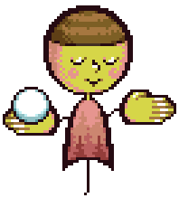
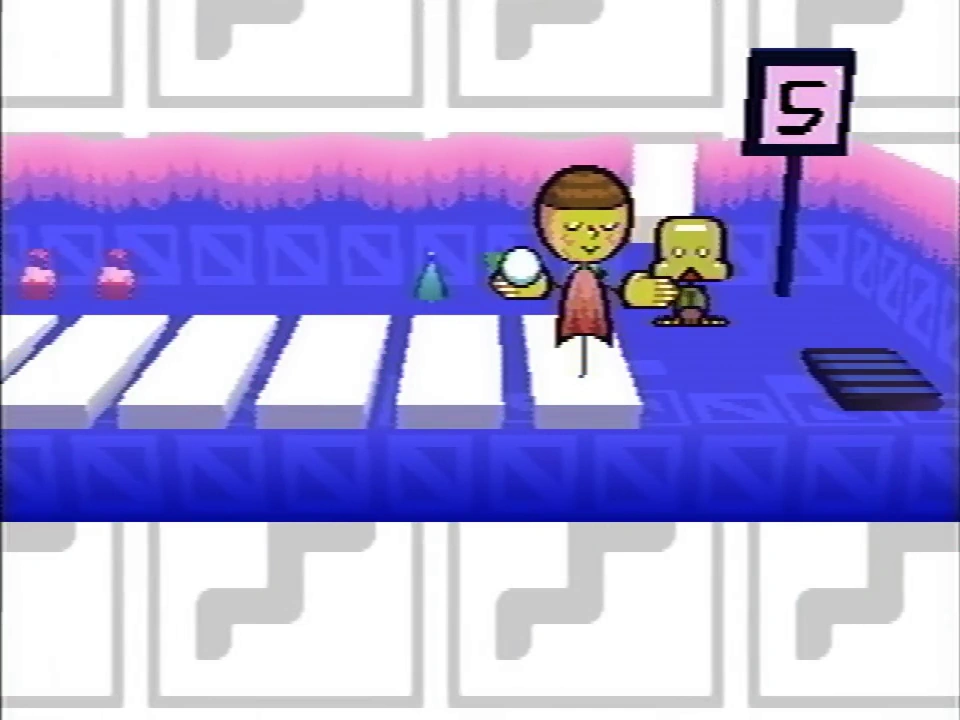
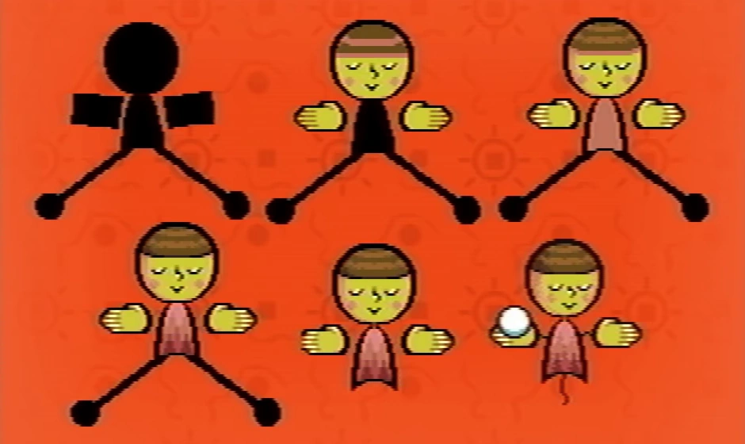

Fanmade recreated sprite
Pen is one of the pets introduced in Even Care. She is found in a room with an oversized piano on the floor and an octave counter despite the fact that she is completely deaf. She doesn't seem to have any clear relationships to any of the other Pets or characters.
Pen appears to be a somewhat humanoid entity- the most humanoid out of all of the pets, other than the three Care Pets. She wears a content expression upon her face, made up of two shut eyes, a perky nose, and a pursed mouth along with slight, pink, blushing cheeks. Her skin is a sour ochre color and she wears what seems to be a striped, brown beanie or yarmulke atop her large, round head. Draped on her pear-shaped torso is what seems to be a shawl or poncho of a dull terracotta color.

Pen in Even Care
She hovers above the ground with what could be a black thread or thin appendage attached to her abdomen, with which her two outstretched hands are suspended. Pen seems to have six fingers on each of her hands and holds what looks like a snowball in her right hand, giving her the overall likeness of a scale as her hands teeter side to side with its weight.
Pen is an aspiring mathematician.
She's entirely deaf. She doesn't even know what sound is, let alone music.
I don't know what she's doing here.
Pen first appears in Petscop 1 in her room in Even Care. Her puzzle involves transposing her position on the piano with the treadmill to a position that lines with the clones created of the guardian when the player steps onto the piano. If her position lines up with the interval of the player, she can be captured. The interval must be set to 7 to capture Pen.

Pen sprite development
In development, shown in the Extra Stuff menu, Pen's older sprites show outstretched "legs" instead of the string. She was also originally facing forward, and she did not hold anything in her hand until the last and current iteration.
Her hand seems to be represented in the Sound Test menu, however; it has five fingers instead of six.
The statement "I don't know what she's doing here," in Pen's description most likely refers to the fact that she is found in a room that houses a piano/revolves around music along with being referenced in a sound test menu, despite being deaf.
Pen's outlandish holding of a snowball may be due to the fact that ballpoint pens can only function due to the ball itself, and ballpoint pens could be seen as a direct reference to Pen's name.
Pen's long, outstretched "legs" early in development could mean that she was originally going to take up the entire space of a piano note, or over multiple. This could also mean that pets weren't planned to always face the camera early in development, the room that Pen was found in was originally at a different orientation, or that she originally had a different puzzle.
| People | Paul · Belle · Carrie · Marvin · Rainer · Anna · Mike · Lina · Jill · Daniel |
|---|---|
| Characters | Guardian · Amber · Pen · Randice · Roneth · Toneth · Wavey · Care · Tiara |
{kind=link}
{kind=link}
{kind=link}
{kind=link}
{kind=link}
{kind=link}